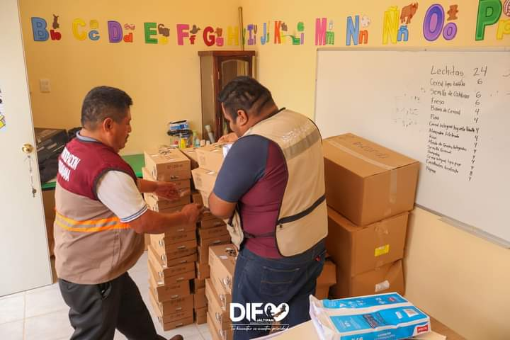
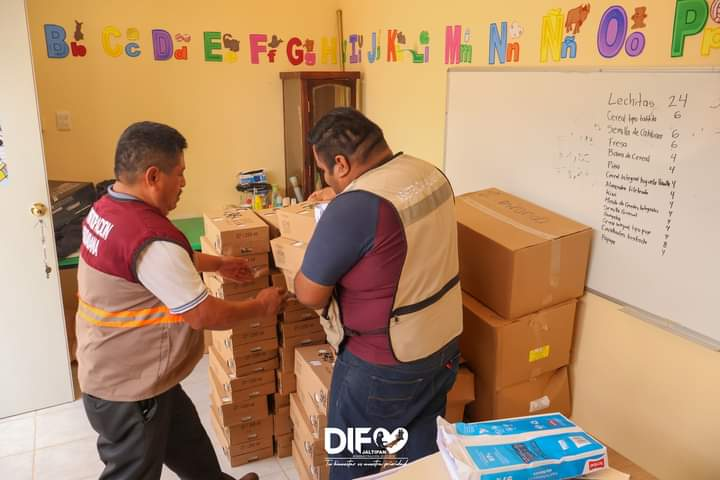
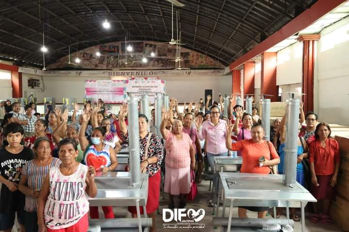
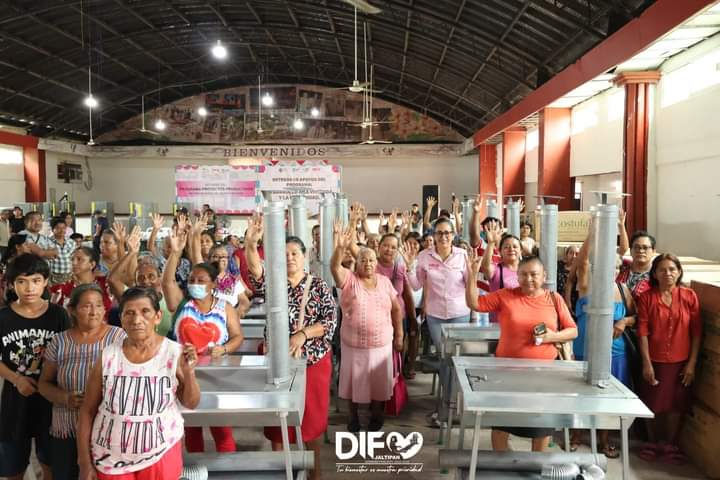

Bienvenidos a AsisteID
AsisteID es una herramienta para escanear tu CURP mediante un QR, gestionar tus registros y obtener información útil sobre localidades cercanas. Una aplicación pensada para tu identificación y las comunidades cercanas.
AsisteID es una herramienta para escanear tu CURP mediante un QR, gestionar tus registros y obtener información útil sobre localidades cercanas. Una aplicación pensada para tu identificación y las comunidades cercanas.

 



 

Información de la Aplicación
Descubre todas las funciones y ventajas de AsisteID, la aplicación diseñada para facilitar la gestión de tus registros y obtener información sobre tus comunidades cercanas. Escanea tu CURP de manera rápida y sencilla utilizando códigos QR.